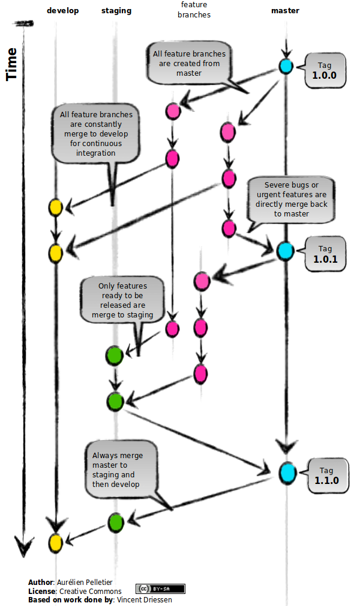

class: center, middle # Git branching models @magnusstubman --- # Gitflow <img src="gitflow.png" style="height: 562px; margin-left: auto; margin-right: auto; display: block;"/> --- # Anotherflow  --- class: center, middle # References [http://nvie.com/posts/a-successful-git-branching-model/!](http://nvie.com/posts/a-successful-git-branching-model/) [http://blogpro.toutantic.net/2012/01/02/another-git-branching-model/!](http://blogpro.toutantic.net/2012/01/02/another-git-branching-model/)